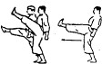
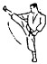
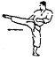
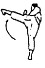
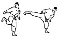
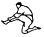
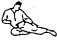
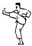
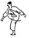
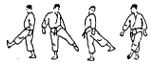

|  | Mae Geri | Calcio frontale. Il ginocchio sale verso il torace e la gamba si estende per colpire con il Koshi. Può essere Keage (slancio) o Kekomi (spinto). |
| Ren Geri | Doppio calcio frontale consecutivo. |
|  | Yoko Geri Keage | Calcio laterale di slancio. Il piede parte dal ginocchio piegato e si lancia lateralmente in semicerchio. Colpisce con il Sokuto. |
|  | Yoko Geri Kekomi | Calcio laterale spinto. Simile al Keage, ma con estensione mantenuta. Colpisce torace, fianchi, coscia o plesso solare. |
|  | Mawashi Geri | Calcio circolare. Il ginocchio si alza lateralmente e si colpisce con Haisoku o Teisoku viso, addome o collo. |
|  | Ushiro Geri | Calcio all’indietro. Il corpo si inclina leggermente in avanti e il piede spinge dietro. Evitare di inclinare troppo il busto. |
|  | Mae Tobi Geri | Calcio volante frontale. Salto con estensione frontale del calcio. |
|  | Yoko Tobi Geri | Calcio volante laterale. Colpo laterale eseguito in salto. |
|  | Mikazuki Geri | Calcio a mezzaluna. Movimento a semicerchio usato per parare o contrattaccare a addome o inguine. |
|  | Hittsui Geri | Colpo di ginocchio. Frontale (Mae Hittsui Geri) o circolare (Mawashi Hittsui Geri). Colpisce in corpo a corpo. |
|  | Fumikomi Geri | Calcio dall’alto verso il basso, con il peso del corpo. Efficace contro ginocchio o collo del piede dell’avversario. |